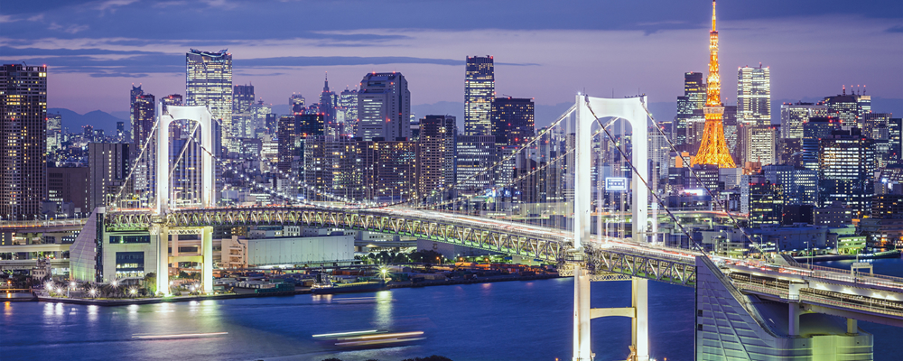
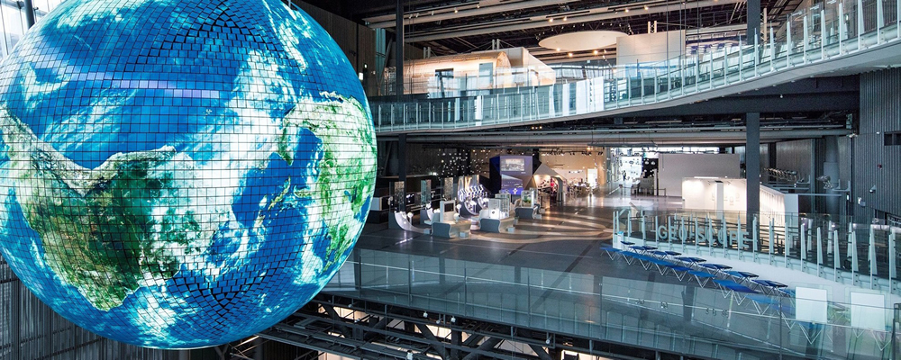
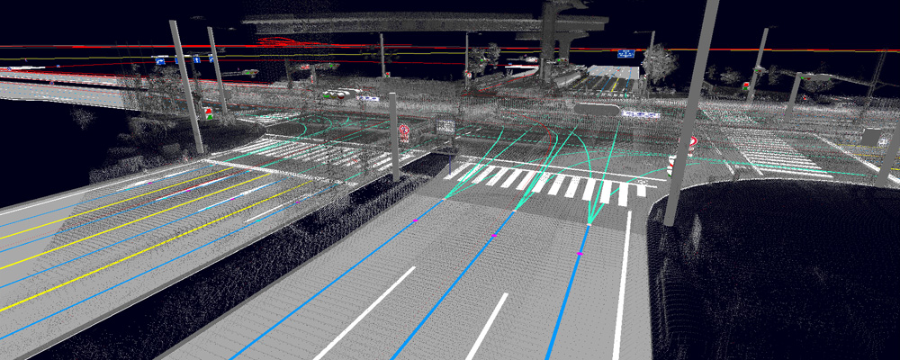
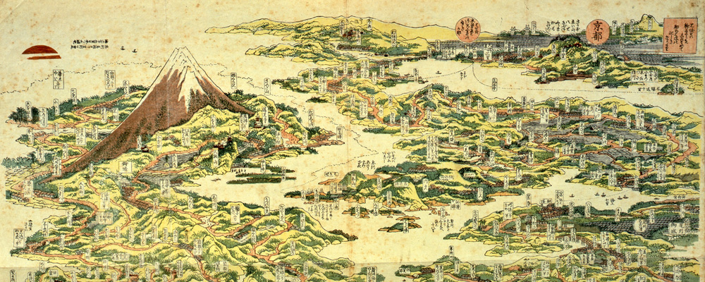
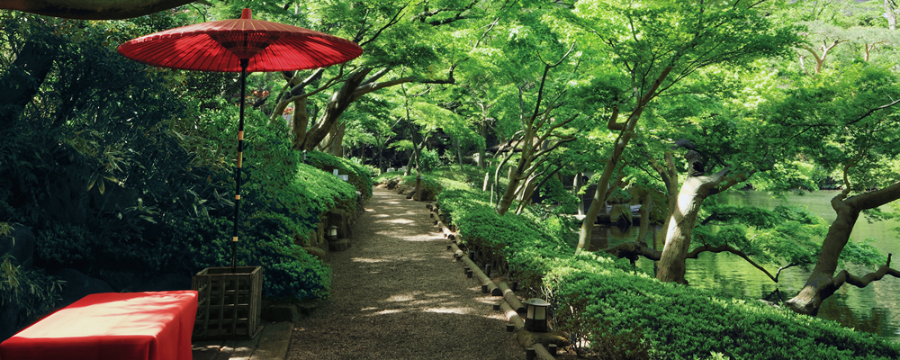
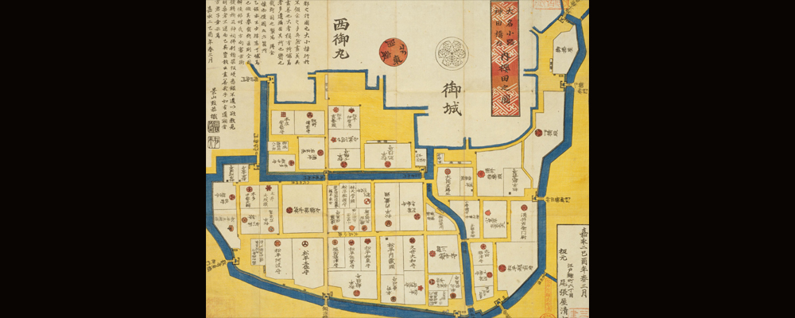
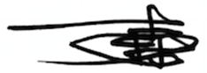

- 
- 
- 
- 
- 
- 

What's New
- 19 July 2019
- <Schedule of Closing Ceremony has been changed>
Closing Ceremony on 20 July will start from 1:30 pm. - 16 July 2019
- Oral Program and Papers, Poster Program and Papers are now available.
- 12 July 2019
- INTERNATIONAL CARTOGRAPHIC EXHIBITION CATALOGUE is now available.
- 9 July 2019
- Conference Program , Registration Desk, Lunch Map is now available.
- 25 June 2019
- 後援学協会向け・特別参加費による申し込みページ開設しました（申込期限7/12中）
- 25 June 2019
- Keynote Presentations, Access, Commission Business Meeting, Guidelines for Presentation is open.
- 4 June 2019
- Registration is now closed.
*On site registration is available by cash and credit card at Tokyo International Exchange Center. - 31 May 2019
- Tentative Program is now available.
- 9 May 2019
- Submission of Sponsorship and International Technical-Commercial Exhibition application deadline is extended to 31th May.
- 12 April 2019
- Final Manuscript submission is closed.
- 10 April 2019
- Submission of International Technical-Commercial Exhibition application deadline is extended to 19th April.
- 18 March 2019
- Final Manuscript submission is open until 10 April 2019.
- 5 March 2019
- Submission of final manuscripts for Proceedings and Advances is extended to 10 April, 2019.
*Please note that the early-bird registration deadline remains 3 April, 2019. - 28 Feb 2019
- Travel Grant submission is extended to 8 March, 2019.
- 20 Feb 2019
- Notification of acceptance is extended to 28 February, 2019.
- 12 Feb 2019
- Guideline for International Cartographic Exhibition is now available.
- 21 Jan 2019
- Registration is open.
- 10 Jan 2019
- Abstract submission is closed.
- 28 Dec 2018
- Information on International Cartographic Exhibition
- 26 Dec 2018
- Information on Travel Grant
- 26 Dec 2018
- Information on Orienteering
- 12 Dec 2018
- Full paper submission is closed. Abstract submission deadline is extended to 8 January, 2019.
Registration Desk
Place: 1st floor of the Plaza Heisei
Registration schedule:
| MON 15 JUL | TUE 16 JUL | WED 17 JUL | THU 18 JUL | FRI 19 JUL | SAT 20 JUL |
|---|---|---|---|---|---|
| 13:00-20:00 | 8:00-18:00 | 8:00-18:00 | 8:00-18:00 | 8:00-18:00 | 8:30-12:00 |
<NOTE>
To participants, please register first at 1st floor of the Plaza Heisei.
*Registration desk will be not placed at other venue of ICC2019.
SPONSORS
Invitation to ICC 2019
Nowadays, we are living in a transitional era in the field of cartography. With the latest technology, maps are not only for professionals to study and explore, but are widely used among the general public. Japan, with the uniqueness of the use of maps and the cutting edge technology in mapping, would surely offer every delegate a new and fruitful experience during the Conference.
The Conference venue will be the National Museum of Emerging Science and Innovation, located in the beautiful Tokyo bay area. The area is where some of the main facilities of the 2020 Olympic and Paralympic Games will be located, sure to be some of the most attractive spots in Tokyo. The Museum is equipped with excellent space for our conference sessions, map exhibition and technical exhibition.
Greater Tokyo, although a metropolis with over 37 million citizens, is known to be the one of the safest cities in the world. The City has various charms to visit and experience, from historical monuments to museums to theatres. Shopping in large department stores as well as small shops on the tiny streets is another enjoyable moment. Tokyo is also known for its gourmet, with over 100,000 restaurants the most Michelin stars in the world. The proposed date of the Conference is July, which will be just after the end of the rainy season, and summer in the northern hemisphere.
I look forward to welcoming you all to Tokyo for ICC 2019 to share significant scientific findings as well as cultural experiences. I am confident that you will all enjoy the Japanese hospitality in Tokyo.
Sincerely,

Takashi MORITA
ICC2019 Important dates
Papers
| Call for papers opens | 31 Aug 2018 |
| Submission of full papers for Advances | |
| Submission of abstracts for Abstracts and Proceedings | |
| Notification of acceptance | |
| Submission of final manuscripts for Proceedings, Advances and Abstracts |
Exhibition
| Submission interface for International Cartographic Exhibition opens | |
| Submission interface for International Cartographic Exhibition closes |
Registration
| Conference registration deadline for presenters/authors |